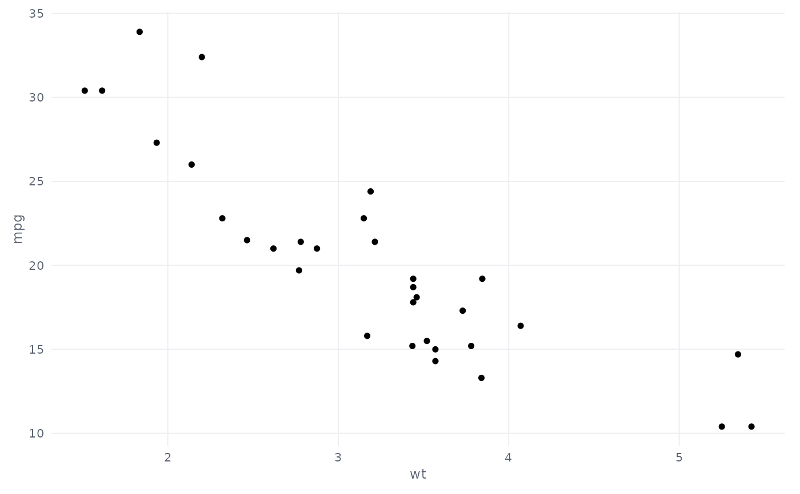

eyesim ggplot2 theme
theme_eyesim.Rd`theme_eyesim()` is the house theme shared by all eyesim plots: plain background, light major grid, left-aligned title block, and a small grey caption for provenance notes. `theme_eyesim_spatial()` is the variant used for stimulus-space plots (scanpaths, density maps): no axes or grid, and a thin frame marking the stimulus extent.
Usage
theme_eyesim(base_size = 10, base_family = "")
theme_eyesim_spatial(base_size = 10, base_family = "")Details
Both return ordinary ggplot2 themes, so they can be added to any plot and further modified with [ggplot2::theme()].
See also
Other visualization:
anim_scanpath(),
element_text_wrap(),
eyesim_colours(),
plot.eye_density(),
plot.fixation_group(),
scale_fill_eyesim_density()
Examples
library(ggplot2)
ggplot(mtcars, aes(wt, mpg)) + geom_point() + theme_eyesim()
